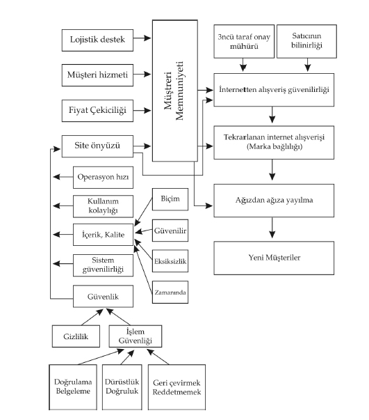
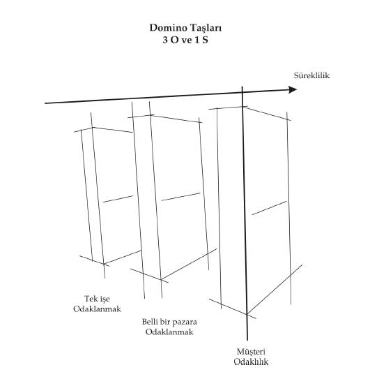

“Bir maytap, ampulden daha parlak bir ışık verebilir ama onu sokağınızı aydınlatmak için kullanamazsınız çünkü yeterince uzun süre yanmaz.
Başarı için; kalıcılık, parlaklıktan daha gereklidir.”
Richard Loyd Jones
İncelediğimiz girişimci hikaye örneklerinde onları bu noktaya getiren bazı ortak noktalar var. Bugüne kadar başarıyla gelmiş olan bu şirketler bize birçok yönden rehberlik ediyor. Aynı özellikler, birçok diğer girişimcide de bulunuyor. Gelin birlikte ortak noktalara bakalım.
İncelediğimiz başarılı örneklerde tüm girişimciler 3 farklı odaklanmayı bilinçli veya bilinçsiz yapıyorlar. Bu faktörlere 3O diyelim. Peki nedir bu 3 farklı odaklanma?
1. İşe odaklanma
2. Pazar bölümüne odaklanma
3. Müşteri odaklanma
Birincisi yeni girişiminize başladığınızda başka bir işle uğraşmayacaksınız. Yani bir şirkette çalışırken, bir şirket kurup onun başarılı olmasını bekleyerek işten ayrılacağınızı düşünmek çok güç olur. Kararınızı vermeniz gerekli. Profesyonel yaşama devam edebilirsiniz veya işinizden ayrılıp hayalinizdeki işi kurarak başına geçebilirsiniz. Her ikisini uzun süre sürdürmek odağınızın en sonunda kaybolmasına neden olacaktır. Yani her iki işteki başarısızlık ihtimaliniz artacaktır. Bir süre sonra doğal bir süreç sizi bu kararı vermeye götürecektir.
Arkadaşlarınızla konuştuğunuz iş fikrini hayata geçirmek için işinizden ayrıldığınızda fizibilitenizi çok doğru hesaplamış olmalısınız. Elinizdeki sermaye sizi ne kadar götürecek? Bunun yanı sıra beklenmeyen bir durumla karşılaştığınızda ne yapacaksınız? Bunları göz önünde tutarak yola çıkmanız gerekmektedir. Tüm riskleri önceden görmeniz mümkün olmasa da ana hatlarını ortaya dökebilirsiniz.
yemeksepeti.com hikayesi bize bu konuda çok güzel bir örnek veriyor. Projeye baştan inanan ortakların bir kısmı doğrudan ellerini taşın altına koymuşlar ve işin başına geçmişlerdir. Başta fikri bilen hatta ona inandıklarını söyleyen bazı katılımcılar ortak olmamış ve projenin dışında kalmışlardır. Bunun yanı sıra üç ortağın tek işi baştan beri yemeksepeti.com projesi olmuştur, bunun dışında başka bir işle ilgilenmemişlerdir. Aynı şekilde gittigidiyor.com’da Serkan ve Burak da mimarlığı kademeli olarak bırakarak sadece internet üzerindeki iş modellerine odaklanmışlardır. Tüm dikkatlerini sitenin başarılı olmasına vermişlerdir. Arkalarındaki tüm köprüleri yakıp “girişim adasına” yol alanlar başarıdan başka bir yol olmadığını bilmektedirler. Sadece girişim yolunda yürüyüp yolda buldukları başka şeylerle uğraşmamaktadırlar.
İşinizden ayrılmış kendi işinize odaklanmanın dışında büyük firmaların içinde kurulmuş küçük girişimcilerin en büyük sorunu fikirleri çok yaratıcı ve gelecek vaad ediyor olsa da ana firmanın işi içinde bu girişim odak noktasının dışında olmasıdır. Yani esas iş, ana firmanın finansmanını sağlayan iş olacaktır. Internet üzerinde kurulmuş şirket her geçen gün kendi rekorlarını kırsa da toplam içinde göz ardı edilecek rakamlar olabilir. Odak dışında olma işin başarısızlığı için zemin hazırlayabilir. Yaşanacak en yakın kriz ortamında kesilecek bütçe zarar içinde olan bu yeni girişim olabilir. Bu sebeple yaptığınız işin sadece fikrinizi hayata geçirecek bu iş olması gereklidir. İşi başka alanlarda olan bir organizasyon içinde fikrinizi yapmaya çalışıyorsanız ilk odak noktasının dışında kalabilirsiniz. Türkiye’de buna benzer örnekler çoktur. İnternet fırtınasını kaçırmak istemeyen bir çok holding kendi içlerinde küçük ekipler oluşturarak ana işlerinin dışında girişimler başlatmış ancak rakamlar onlar açısından hep küçük kalmıştır. Büyümenin önündeki en büyük engel şirketin kendi büyüklüğü olmuştur. Girişim ruhu ile kurumsal organizasyon kültürü birbirine uymadığı için çatışmalar kolaylıkla yaşanmıştır. Girişimcilerin organizasyon kültürü ile yıllardan beri oluşmuş bir şirket kültürü arasında oldukça farklar vardır. Büyük ofis içinde bir bölüm olarak başlayan fikirlerin çoğu başarısız olabilir.
Ömür Topaç da İTÜ Mimarlık 1998 mezunu, daha sonra yüksek lisans yapmış bir mimardır. Commodore’lu, Amiga’lı günlerden itibaren bilgisayarla çok yakından ilgilenmektedir. Bu alanda üniversite sonrasında kendisini geliştirmeye başlarlar. Mimarlıktan mezun olduktan sonra kendi alanında çalışırken tüm tasarım programlarını, internet programlarını kitaplardan okuyarak öğrenir. Akrabası olan Hakkı Bey kendisinden yaptığı resimleri gösterebileceği bir sayfa yapıp yapamacağını sorar. O gün için çok başarılı bir sayfa yapar ve böylece diğer tasarım işleri için ilk adımı atmış olur. Türkiye’nin önemli bir Holding şirketlerinin tüm sitelerinin yapılması için Holding içinde bir şirket kurarlar. Sadece iki kişi olarak işlere girişirler. Şirketin iç işleri bitince dışarıya da tasarım hizmeti vermeye başlarlar. Bu sırada tasarımın yanı sıra internet fırtınasında kendileri için bir iş modelini kurabileceklerini düşünürler. Şirket sahipleri de internetle yakından ilgilendikleri için bu yeni işe onay verirler. Türkiye’de eksiklik olarak gördükleri arkadaş bulma modelini uygulamaya koyuyorlar. loginlove.com sitesini 2003 yılında açarlar. loginlove.com siteye giren ziyaretçilerin kişisel bilgilerini girerek diğer üyelerle iletişim kurmalarını sağlayan bir topluluk sitesidir. Kadın ve erkeklerin bir arada olmasından dolayı bu tür siteler, arkadaşlık veya çöpçatanlık siteleri olarak adlandırılmaktadır. Tüm aşamaları çok titizlikle gerçekleştirirler. Ortaya tasarım ve işleyiş açısından başarılı bir site ortaya çıkar. Açıldıktan sonra basın bültenleri ve diğer kanalları kullanarak sitelerini duyururlar. 2004 yılında siteye gelir modelini de ekleyerek yollarına devam ederler. Kurdukları şirketin tek işi loginlove.com sitesi değil, bunun yanı sıra şirket içi ve dışı tasarımlarla ve yeni işlerle de uğraşırlar. Şirketin bağlı bulunduğu Holding’in ise iş alanları dört ana gruptan oluşmaktadır.
• Kaynak Grubu,
• Döküm Grubu,
• Yatırım Grubu,
• Bilişim Grubu.
loginlove.com’da kurulan şirketin projelerinden bir tanesidir. Durumu böyle özetledikten sonra Şirketler Grubu kendi kor işleri olan yapı market konusunda elektronik ticaret işine girmeye karar verir ve internet projesine 2004 yılında çalışmaya başlar. 2005 yılında elektronik ticaret sitesini açarlar. loginlove.com devam ettiği sırada siteyi destekleyeceklerini düşündükleri kadın odaklı loginlife.com sitesini de açmışlardır. Durum oldukça karışık hal almıştır. Tüm bu projelerin altından kalkacak kaynakları olmasına rağmen odak noktalarının dışında kalan arkadaşlık modeli yavaş yavaş dışarda kalmaya başlamıştır. 2005’te arkadaşlık sitesinin paralı kısmını kapatırlar. Böylece site ilk açılış günlerindeki gibi bedava olmuştur. Tabii bu süreç içinde internette yeni arkadaşlık siteleri açılmış ve rekabet oldukça kızışmıştır. Durum buraya gelince karar vermek üst yönetime kalmıştır. Büyük bir şirket içinde bu tip projeler olduğunda ana işin dışında kalmasının yanı sıra üretilen katma değer toplamın içinde çok küçük gözükebilmektedir. Karşılaştırılan rakamlar genellikle şirketin diğer finansalları olmaktadır. Loginlove.com kendi başına ayakta duran bir girişim olsaydı belki bugünkü durumuna gelmemiş olabilirdi.
İkinci “O” pazar bölümüne odaklanma. Küçük girişimcileri her türlü kaynağı kısıtlıdır. Zaman, insan, sermaye ve diğerleri. Bu bakımdan tüm enerjilerini doğru bir hedefe yönetmeleri ve bunu önceden bilmeleri gerekmektedir. Her şeyi yapalım bir tanesi başarılı olursa ona odaklanırız fikri bir yanılgıdır. Başlangıçta yumurtalarınızı farklı sepete koyamazsınız. Çünkü bir sepetiniz ve bir tavuğunuz vardır. En verimli şekilde tavuktan yumurta almayı ve bu yumurtayı pazara ulaştırıp satmayı düşünmek zorundasınız. Her farklı sepet yeni bir maliyet demektir. Bir sepet ve gideceğiniz yeri önceden harita üzerinden işaretlemeniz gerekmektedir. Ne zaman neleri başarmak istediğinizi araştırmanız sonucunda yazılı hale geçirmek en iyisidir.
Fikrinizin çerçevesi ne kadar belirli olursa ve hedeşediğiniz pazar ne kadar hedeşenmiş olursa başarı şansınız o kadar artar. Çok büyük pazarın çekiciliği yerine daha küçük bir pazara odaklanmak doğru olabilir. Çok büyük pazar payları her zaman yüksek kârlılık anlamına gelmez. Küçük pazarlar bazen daha kârlı olabilir. Rekabet daha az olduğu için pazarlamanın tüm kurallarını siz belirliyor olabilirsiniz. O küçük piyasada bir yaratıcılık örneği de yapmışsanız o zaman dışardan girecek yeni rakipleri bile engelleyebilirsiniz.
İş fikrinizi çok geniş tutarak, başarı sağladığınız piyasa bölümüne geçmeyi düşünmeniz, birinci kuraldaki odaklanmamayla aynı sonuçları doğurabilir. Girişim yapacağınız alanı çok doğru tanımlamanız, pazarı iyi analiz yaparak doğru bölüme girmeniz gerekir. Internet üzerinde yeni bir Amazon.com olmak istiyorsanız bunun için kaynaklarınızı da planlamanız gereklidir. Odağınızı pazarın bir kısmına yönlendirerek, onun üzerinde sıkı çalışmanız size daha kısa sürede başarı getirebilir. Belli bir konuya odaklanmamak, sis içinde yüzmeye benzer. Odaklandığımız noktayı bilmediğimiz için hedefi bulmak zor olacaktır. Sonuna gelmeden motivasyonumuzu kayedersiniz. Tavuk Suyuna Çorba kitabında yer alan bir öykü bu duruma güzel bir örnek oluşturuyor.
Florence Chadwick önüne baktığı zaman kesintisiz bir sisten başka birşey göremiyordu. Tüm vücudu uyuşmuştu. Yaklaşık onaltı saatir yüzüyordu. İngiltere kanalını iki yönden de geçen ilk kadın da zaten oydu. 34 yaşında şimdi, hedefi Catalina Adası’ndan Kaliforniya sahillerine yüzen ilk kadın olmaktı.
1952 yılının 4 Temmuz’unda, deniz buz banyosu kadar soğuk ve sis o kadar yoğundu ki ona destek verecek tekneleri bile zor olarak görüyordu. Sadece tüfek atışlarıyla uzaklaştırılabilecek olan köpek balıkları onun yalnız yüzen vücuduna doğru deniz gezintisine çıkmışlardı bile. Televizyonda milyonlar onu seyrederken, saatler ilerledikçe bedenini denizin soğukluğu sıkıca sarıyor, oda soğuğa karşı amansız bir mücadele veriyordu. Yanında giden teknelerden birinde olan annesi ve çalıştırıcısı ona sürekli cesaret veriyorlardı. Ona kıyının daha uzakta olmadığını anlatıyorlardı. Fakat onun yüzerken gördüğü sadece sisti. Annesi ve çalıştırcısı ona bırakmaması için ısrar ediyorlardı. Şimdiye kadar hiç yarıda bırakmamıştı zaten. Sadece bitirmesine yarım mil kalmışken, dışarı çıkmak istediğini söyledi.
Birkaç saat sonra soğuk vücudu kendine yeni yeni kendine gelirken, gazete muhabirine “Bak kendimi haklı çıkarmak için değil ama eğer karayı görebilseydim bunu başarırdım” dedi. Gerçektende onu yenen aşırı yorgunluğu veya soğuk su değildi. Sisti. Hedefini görememişti.
İki ay sonra tekrar denedi. Bu sefer, aynı yoğunluktaki sise rağmen kendisine olan tüm güveniyle ve hedefini kafasında açıkça şekillendirerek yüzdü. Sisin arkasında biryerde kara olduğunu biliyordu ve bu sefer başardı. şorence Chadwick Catalina Kanalını yüzen ilk kadın oldu, hem de erkekler rekorundan iki saat daha iyi sürede.
Bu hikaye bize odaklanmamızı ve hedefimizi başlangıçta neden koymamız gerektiğini net olarak anlatıyor.
gezinet.net
İlk iki odaklanma maddesinden bahsettikten sonra bu iki konuda sorunlar yaşamış bir internet sitesinden hemen bahsedelim;
Gezinet.net. Bugüne kadar nasıl gelmişler ve kapanmaktan nasıl dönmüşler? Odaklanma konusunda diğer anlatılan siteler ne kadar başarılı olmuşlarsa gezinet.net başlangıçta işine odaklanmakta güçlük çekmiştir.
Yavuz Tosun 1989 İstanbul Üniversitesi İktisat Fakültesi maliye bölümünde okumuş, ancak üniversite sırasında çalışmaya başlayınca mezun olamamıştır. Okurken Swiss otelde çalışır daha sonra Azerbeycan’dan gelen iş teklifi üzerine 3 yıl orada kalır. Orada hem çalışır hem de Türk gazetelerini Bakü’de dağıtacak bir şirket kurar. 1998 yılında Türkiye’ye geri döndüğünde ablasının 1995’te başka bir ortak ile kurduğu “Davet Catering” yemek dağıtımı ve organizasyon yapan şirketinin başına geçer. Bu sırada Kadıköy Belediyesi evlendirme dairesinin kokteyl salonunun işletmesini alırlar. Salonun işletmesi için bankadan kredi çekerler. Yavuz bu sırada Azerbaycan ile iş ilişkileri kurarak Türkiye’den ihracat işine de başlar.
1999 yılında bilgisayar alarak internette dolaşmaya başlar. Register.com sitesini keşfettikten sonra tatil.com alan adını 7.500 USD’a satın almak üzere Amerika’dan isim sahibi ile anlaşır, ama satın almayı başaramaz. Bunun üzerine kendisi aklında bulunan turizm sitesini yapmak üzere gezinet.net adını satın alır. Dayısının oğlu o sırada Bodrum’daki işini kapatıp geldiği için bu işin başına geçebileceğini düşünür. Internet üzerindeki bu siteyi tüm işlerinden biri olarak görürler. Cengiz’i işin başına koyup 2 kişiyi de çalışan olarak alıp işe koyulurlar. Belli bir iş planları ortada olmadığı için birden turizm sitesi fikri her şeyin bir arada bulunduğu bir internet sitesi haline gelir. Aniden 20 kişilik ekibe ulaşırlar. Bu sırada Otelciler Birliğiyle görüşmeye başlarlar. Tüm otelleri sistemlerine kaydetmeyi ve otellerden alacakları sabit bedellerin belli bir kısmını otelciler birliğine vermeyi önerirler, ancak istedikleri modeli uygulamaya geçiremezler.
2000 yılına gelindiğinde bir çok şirket turizm işini internette yapmak üzere faaliyete geçer. gezinet.net ilk kuruluş fikrinden biraz uzakta her türlü bilginin verildiği bir site haline gelir. Tarihi yerler, yiyecek içecek, haberler ve bir çok konu site üzerinde 20 kişilik bir ekip tarafından güncellenir. Bu sırada tüm finansman diğer işlerden sağlanır. Evlendirme dairesindeki kokteyl salonu ve Azerbeycan’a yapılan promosyon malzemesi ihracatı bir bakıma finansmanı sağlamaktadır. Sitenin büyümesi üzerine bir kaç yatırımcı onlarla ortak iş yapabilmek için görüşmeler yapsalarda sonuç sağlanamaz. O sırada İxir’le yıllık reklam anlaşması yaparlar fakat İxir’in ani bir kararla faaliyetlerine son vermesi bu gelir kapısını birden kapatır. Azerbeycan’a olan ihracat işi yavaşlamaya başlar, organizasyon işi için aldıkları yüksek banka kredileriyle 2000 Kasım’daki krize girerler.
Ekonomik durgunluk 2001 yılında birden derinleşir. Gelir modeli olmayan gezinet.net sitesinden ilk önce akrabaları Cengiz ayrılır. Yavuz o güne kadar işin başında durmadığı için neler olduğunu anlamak ve işi toparlamak üzere başa geçer. 1-2 ay neler olacağını görmek için kadroyu aynen korur. Giderlerin hızla artması ve ödeme zorluklarının baş göstermesi üzerine 20 kişilik ekip ilk önce 8’e daha sonrada 2’ye kadar düşer. Büyümelerine müteakip tuttukları Çiftehavuzlar’daki yeni ofise gider ve tüm bilgisayar ve elektronik eşyaları ikinci elde satar. Sadece 2 bilgisayar kalır bunlarla eski ofislerine gelir ve her şeye baştan başlayabilmek için işin başına geçer. Bu sırada ekonomik kriz sebebiyle kredi borçları birikmiş, diğer işlerinden çekleri geri dönmüş ve finansal sıkıntılar baş göstermiştir. Tüm bunlara rağmen gezinet.net sitesini kapatmaz.
Siteyi ilk önce küçültür. Sadece turizm üzerine odaklanır. Diğer tüm bilgileri siteden kaldırır. Sistemde bulunan otelleri tek tek elden geçirir. E-posta adresleri olmayan veya kapalı olanları sistemden çıkarır. 1800 toplam tesis sayısı birden 200 adete düşer. Bu firmalara siteden yararlanmanın belli bir süre için ücretsiz olduğunu bildirir. Oteller fiyatlarını güncellemeye başlarlar. Acentalarla da aynı şekilde işbirliğine gider.
gezinet.net artık sadece internet üzerinden rezervasyon yapmaya odaklanmıştır. Bir otel sahibi boş olduklarından şikayetçi olarak sitelerinde reklam yayınlamak istediğinden bahseder. Yavuz için bu bir fırsat olur ve sitenin ziyaretçilerine bu oteli tanıtan bir e-posta bülteni gönderirler. Oteli bu şekilde doldurduklarını görünce güçlerini bir bakıma anlamışlardır.
Sezon sonuna doğru otellere gönderdikleri rezervasyon taleplerinin artması üzerine gelecek 2004 yaz sezonu için gelir modellerini düşünmeye başlar. 2004 yılında komisyon bazında çalışmaya başlayacaklarını otellerin fikirlerini alarak karar verir. Komisyon bazında çalışma gereği bir acenta olmalarını doğurur. Bunun üzerine acentası olan bir eski arkadaşına iş fikrini açar. Siteye ortak olmak isteyen bu arkadaşıyla anlaşamayınca Bir diğer acenta sahibi fievket’e fikrini anlatır ve onlarla işbirliğine başlarlar. Taksim’deki ofiste bir çağrı merkezi açarlar. Rezervasyon talepleri acentaya gelecektir. Bu çalışma modeline başlasalar da bir iki ay sonra acenta’nın kendi işlerindeki sorunlar üzerine elemanları gezinet.net ofisine çekerek azaltmak zorunda kalır.
Bunun üzerine 2004 yılında toplam 7 kişiye çıkan gezinet.net ekibi tüm iş yükünü kendi üzerlerine alarak yollarına devam ederler. Ziyaretçi sayısı günlük 15.000 adeti bulur. 2004 yılında toplam 100.000 YTL’lik komisyon faturası keserler. Başabaş noktasına gelirler. Birçok yeni gelir modelini denemiş olsalar da, otellerden rezervasyon başına aldıkları gelirler onları bugüne taşımıştır. Acentaların turlarını girip, onlara müşteri göndermek isteseler de nakit toplamadaki sorunlardan dolayı, bu işi gelir modellerine dahil edemezler. gezinet.net üyelerine belli bir indirimle sitelerinde acentalara turlarını girme seçeneği verirler. Uçak bileti satma istekleri acentalar arasında haksız rekabete yol açtığı için uçak firmaları tarafından istenmez. 5 sene içinde toplam 11.000 aktif müşteri sayısına ve toplam 120.000 rezervasyon talebine ulaşırlar. Yavuz bu işe toplam 250.000 YTL’den daha fazla bir yatırım yapmıştır. 2005 yılında internetin yanı sıra müşteri merkezi ve gazetelerin eklerine küçük kataloglar girmeye başlamışlardır.
gezinet.net sitesinin ilerde daha başarılı olabileceğini düşünüyorum ancak bugüne kadar gelirken yaşadıkları bize odaklanma konusunda açıkça neler yapmamız gerektiğini anlatıyor. Tek işiniz odak noktanız değilse ve siz bir çok konuya odaklanmak zorunda kalıyorsanız başarının gelmesi gecikebilir veya hiç gelmeyebilir. Yavuz, gezinet.net’e ilk yıllarda daha az ilgi gösterirken, 2003 ve 2004 yılında daha çok odaklanmaya başlar. İpleri ele alır. Bunun yanı sıra gezinet.net her ne kadar başta bir turizm sitesi olarak kurulmuş olsa da daha sonra bunu unutup her türlü içeriği vermeye, yani pazar odağını kaybetmeye başlar. Bunun sonucu ekip 20 kişiye çıkmak zorunda kaldığı gibi gelir modeli de üretemezler. Yaşanan kriz, doğal olarak işin nerdeyse kapanmasına kadar giderken, site odak noktasına doğru dönüp küçülünce hayatta kalma şansını yakalar. İşin fikir babası Yavuz nerdeyse tüm ekibi işten çıkartmak zorunda kaldıktan sonra sıfırdan işe odaklanır ve işin odağını küçülterek o konuda başarılı olmak için tekrar yola koyulur. gezinet.net diğer bahsettiğimiz sitelerden farklı olarak, odaklanma sorunu yaşamıştır. Dolayısıyla başarıya ulaşması daha zordur. Bu sorun tüm girişimciler için bir tuzak olabilir.
Üçüncü odaklanmamız ise üstteki iki maddeyi yerine getirdikten sonra kuracağınız modelin ortasına müşterinizi yerleştirmenizi gerektirir. Müşterinin sorunlarına ve memnuniyetine çok önem göstermeniz gereklidir. Buna kısaca müşteri odaklılık veya müşteri merkeziyetçilik diyebiliriz. Kurduğunuz şirketinizin pazarlama satış elemanları memnun kalan müşterileriniz olacaktır. Sizin yapmayı düşündüğünüz tüm pazarlama faaliyetlerinden daha hızlı şekilde sizi duyurabilirler. Eğer mutsuz müşteriler yarattıysanız bu kabuğu kırmak için akıntıya karşı çok daha fazla kürek çekmeniz gerekecektir. Kuruluş aşamasında müşteri memnuniyeti akıntısını çok iyi yönetmeniz gerekmektedir.
Müşteri memnuniyeti faktörünü açalım. Mutlu müşteriniz sizden tekrar alışveriş yapacağı gibi arkadaşlarına, yakınlarına sizden bahsedecektir. Kulaktan kulağa büyümeyi bu şekilde sağlamanız mümkündür.
İnternette müşteri memnuniyetini nasıl sağlayabilirsiniz?
4 ana faktör bu değişkeni tetikleyebilir.
1. Müşteri hizmeti
2. Lojistik destek
3. Fiyat çekiciliği
4. İnternet sitesi ön yüzü
Müşteri hizmetinizi siteniz üzerinden e-posta gönderme, form doldurma, özel ekranlardan faydalandırma, canlı sohbet imkanı sağlama, sık sorulan sorular veya telefonla sağlayabilirsiniz. Her birinin maliyeti farklı olacaktır. Bunun yanı sıra anlatılanların bileşkesini de kullanmanız mümkündür.
E-postayla müşterilerinizin sorunlarına cevap bulma en basit biçim olarak karşımıza çıkar. E-postaları tek tek cevaplamak oldukça zahmetli ve verimsiz olmasına karşın müşteriler açısından kolay ve hızlı olabilir. E-postalar yerine internet sitesi üzerinden form doldurmak daha gelişmiş olabilir, form metodunun daha gelişmişi ise bilet kesme şeklinde müşterinin geçmiş sorunları ve bilgilerinin saklandığı sistemi kurmak olacaktır. Bu şekilde daha verimli hizmet verilebilir. Bunun yanı sıra internet üzerinde canlı sohbet programlarıyla bu biletleme sistemine giriş yapabilir tüm müşteri hizmetinizi bir arada toplayabilirsiniz. Telefonla vereceğiniz destek hizmetini de mutlaka kayıt altına almanız faydalı olacaktır. Müşteriye kısa sürede dönmek her zaman güvenirlilik kazandıracaktır. Internet sitelerinin kısa süreleri birbirinden farklı olabilir. Yemeksepeti.com için müşteri sorununu dakikalar içinde çözmek gerekli iken, ebebek.com’da bu süre saatlere çıkabilir. Ne kadar hızlı çözerseniz o kadar memnun müşteriler yaratabilirsiniz.
İnternet üzerinde en yoğun sorun lojistikte yaşanmaktadır. Eğer fiziksel ürün satıyorsanız ve bu ürünlerin taşınması gerekliyse bu taktirde üçüncü partiyle yakın ilişki içinde çalışmanız gereklidir. Taşıma firmalarıyla entegrasyon müşterilerin yaşadıkları lojistik problemlerine çözüm getirecektir. Ayrıca stoklu olarak çalışmanız gerekiyorsa ürünlerin tedarikçiden zamanında alınıp ulaştırılması gibi karışık süreçleri başarılı yönetmeniz müşteri memnuniyetini etkileyecektir.
Herkesin aklına ilk başta fiyat değişkeni gelir. Fiyatlarla oynayıp satışı arttırma düşüncesi en kolay çözüm gibi görülmektedir. Burada bahsettiğimiz etiket fiyatının ucuz olması anlamına gelmemektedir. Sizin müşteriye sağladığınız katma değerle ondan talep ettiğiniz ücretin, karşılaştırabilir hizmet ve ürünlerden düşük olması anlamına gelir. Eğer sizin verdiğiniz hizmeti başka kimse vermiyorsa, siz fiyat değişkeniyle daha rahat hareket edebilirsiniz. Bunun yanı sıra fiyat istikrarını korumanız çok önem taşıyacaktır. Müşteriler sürekli değişen fiyatlardan hoşlanmazlar. Bu değişim aşağı veya yukarı yönlü olabilir. Fiyatlar düşüyorsa daha önce satın alan müşteriler pahalıya aldıklarını düşünürler, fiyatları arttırıyorsanız o zaman sizin karınızı arttırdığınızı düşünürler. Bu sebeple fiyat politikanızı uzun süreler için baştan belirlemeniz gerekir.
İnternet sitenizin ön yüzü tüm herkesi yakından ilgilendirir. Siz dahil olmak üzere bu konuya diğer değişkenlerden daha önem veriyor olabilirsiniz. İnternet sitelerinin ön yüzlerini etkileyen değişkenler nelerdir?
1. Operasyon hızı
2. Kullanım kolaylığı
3. İçerik kalitesi
4. Güvenlik
5. Sistem güvenirliği
Sitenizin müşterilerinize hızlı gelmesi ve işlemlerini kısa sürede tamamlamaları için tüm gerekenleri yapmanız gerekmektedir. Bu sebeple raporlamalarınızı sıkı sıkı kontrol ederek ziyaretçilerin davranışlarını yakından takip etmeniz gerekir. Kimler nerede takılıyorlar ve siteden nerede çıkıyorlar? Bu gibi analizleri sürekli yapmalısınız. Sitenizin ana sayfasının hızlı açılmasının yanı sıra alışveriş işleminin en kısa adımda ve en verimli şekilde gerçekleşmesi sizin sitenizin akılda kalmasını sağlar.
İnternetten alışveriş güvenirliği sitenizin güvenliğini en çok etkileyen faktör olacaktır. Bunun yanı sıra sitenizde satılan ürünlerin tedarikçileri, başka bir güven katmanını karşımıza çıkartacaktır. İnternetteki sitelerin güvenirliklerini bazı üçüncü kurumlar yapmaktadırlar. Verdikleri sertifikalar sitenizde bulunduğunda, müşterileriniz sitenin arkasında kimin bulunduğunu doğrulayabilirler. Bunun yanı sıra satılan ürünlerin bilinir olması tek başına yeterli olmaz. Şirketinizin açık adres bilgileri müşterinizin ulaşabilir olması güvenliğe etki yapacaktır. Bu değişken doğrudan müşteri memnuniyetine etki edecektir.
Sitenizin kullanımı mutlaka kolay olmalıdır. Siz işin içinde olduğunuz için sanki tüm herkesi siteniz üzerindeki her şeyi biliyormuş gibi düşünmeyin. En basit ve en kolay olanı seçin. Gelen ziyaretçilerin yeni başladığını düşünün ve tüm tasarımınızı ona göre yapın. google.com bunun için en doğru örneğidir. Kullanım kolaylığı sitenizin operasyonel hızını arttıracaktır.
Müşterinizi memnun ettiğinizde bu onun tekrar alışveriş yapmasını sağlar. Marka bağımlığını bu şekilde sağlayabilirsiniz.
Sitenizin kalitesini, içeriğin biçimi, güvenilir olup olmadığı, eksiksizliği ve zamanında olması belirleyecektir. İçeriğinizi doğru formatta vermeniz gerekmektedir. Grafik, metin ve diğerler biçimleri sitenizde doğru yerde kullanmanız gereklidir. Verdiğiniz bilgi güvenilir ve doğru olmak zorundadır.

Grafik-5
Ürünlerinizin bilgileri hakkında bir küçük yanlışlık yaparsanız ve bu sebeple müşteriniz ürünü geri vermek isterse bir çok sorun ve memnuniyetsizlik ortaya çıkacaktır. Bu sebeple baştan bu konuları düzgün ele almalısınız. Eksiksiz bilgiyi zamanında vermeniz gereklidir. Hepsi birleştiğinde sizin içeriğinizin kalite bileşkesini oluşturacaktır.
Güvenlik, müşterilerinizin bilgilerini saklamanız, gizlilik, işlemlerinin güvenli bir ortamda yapılması anlamına gelir. Kredi kartıyla alışveriş yapan müşterileriniz için doğrulamayı yapmanız ve doğru kişiyi reddetmemeniz gereklidir. Bunun yanı sıra bilgileri güvenli ortamda saklamanız ve başkası bu bilgilere ulaşamadan bankaya göndermeniz gerekli olacaktır. Örneğin SSL sertifikası kullanmanız güvenlik için en önemli adımdır. Güvenliğin diğer bir yönü ise müşteriyle karşılıklı anlaşmış olacağınız sözleşmedir. Bilgileri başka amaçla kullanmamalısınız. İstenmeyen e-postalar sizin güvenilirliğinizi sarsabilir.
Sistem güvenilirliği veya sürekliliği güvenlikten farklıdır. Sitenin aynı hızda ve istenilen zamanda cevap vermesi arkasında çalışan ekibin olduğunun, sunucuların çalıştığının güvenirliliğidir. Ziyaretçiler gece de gündüz de gelseler, aynı hizmeti karşılarında bulmalıdırlar. Şimdi ilk başarı öykümüze geri dönüp neler yapmışlar incelemeye devam edelim.
Mart 2001’de Nevzat Amerika’ya gittiğinde siteyi internet üzerinden takip eder. O ay rekor üzerine rekor kırmışlar, günde toplam 40 sipariş almışlardır. Gözlerine inanamaz. Geri döndüğünde şirkete ilk önemli teklif gelir. 40-50 sipariş aldıkları bu dönemde yemeksepeti.com’u satın almak isteyen önemli bir yatırımcı kapılarını çalmıştır. Şirketin tamamı için 800.000 USD önermektedirler. Ortakların kafası bu dönemde epey karışır. Kendi içlerinde günlerce tartışırlar. Hayatlarının projesini satmak üzeredirler. Şirketi satın almak isteyen yatırımcılar oldukça iş bilir kişilerdir. Bu sebeple Nevzat-Melih ve Cem şirketi tamamen satıp çıkmayı düşünmüşlerdir. Ortak olarak kalmanın ileride sorunlara yol açabileceğini düşünürler. Karşı taraf ise % 50 ortaklık teklif etmektedir. 3 ay boyunca teklifler bir o tarafa bir bu tarafa gider gelir. En sonunda ikinci bir engel aşılmış şirketi satmamaya ve yola devam etmeye karar vermişlerdir. Bunun çok doğru bir karar olduğunu o gün anlamamış olsalar bile bugün kendilerine teklifte bulunan şirketin TMSF’ye devredilmesiyle ne kadar isabetli bir sonuca vardıklarını görürler.
Risk sermayesi şirketleri sermaye yatırmak için Yemeksepeti.com’un küçük olduğunu ve çıkış stratejisinin Türkiye’de olamayacağını söylerler. Tüm bu olanlardan sonra da ortaklar sermaye ve yatırımcı aramazlar. İş planlarına inanmaktadırlar, kar edeceklerini aynı eğilim içinde siparişlerinin artması halinde bir kaç yıl içinde düzlüğe çıkacaklarını görürler.
Temmuz 2001’de Dominos Pizza, Eylül 2001’de de Subway önemli iki yemek markası olarak yemeksepeti.com’un ağına katılırlar. Yazın siparişler mevsimsellik sebebiyle düşük seyreder. 2001 sonbaharıyla birlikte siparişler beklemedikleri bir artış göstermiştir. Günde 150 adet sipariş gelir. Ramazan ayında siparişlerin zamanında teslim edilmesi çok daha önem kazanmıştır. Bu dönemde gösterdikleri hassasiyetle müşterilerin güvenini kazanırlar. Ramazan ayını takip eden yılbaşı akşamı yemek siparişlerinin teslimi için ikinci dönüm noktalarıdır. 2002 yılına kazasız belasız girerler. Sadece bir olay onları oldukça üzer. Yılbaşı hindisini yemeksepeti.com’dan sipariş eden Etiler’deki bir müşterileri adres kısmına oturduğu daire numarasını yanlış girince Hindi teslim edilmeden geri döner, tabi bu olay yılbaşı akşamda biraz başlarını ağrıtır. Bu dönemi başarıyla geçiren yemeksepeti.com’un restoran ağına Mart 2002’de Pizza Hut, Nisan’da KFC, Haziran’da Little Ceasars dahil olur. Bilinen bu markaların site üzerinde yer alması büyümeyi daha da hızlandırır. 2002 yılının ortalarına gelindiğinde toplam 250 restoranla anlaşma sağlanmış günlük sipariş sayısı 300’e ulaşmış ve toplam 15.000 müşteriye ulaşmışlardır.
yemesepeti.com’un internet üzerinde gördüğü bu ilgi diğer girişimcileri de tetikler. Bir çok genç girişimci aynı modeli yapmak için çalışmalara başlarlar. Hatta daha önce Yemeksepeti.com’un diğer illerdeki operasyonunu almak isteyen 3 yeni mezun yemeksepeti.com’u rekabet kuruluna şikayet eder. Diğer siteler internet sayfalarını kopyalayıp kendi modellerini kurmak isterler. Tüm bunlar 3 ortağa geldikleri noktayı anlatmaktadır. Artık taklit edilen bir site olmuşlardır. Hatta PizzaMax, bir “e” harfi eksiği ile “yemeksepti.com” alan adını alıp kendi sitesine yönlendirdiğinde şaşırıp kalmışlardır. Neden buna gerek duyulduğunu anlam veremezler. yemeksepeti.com internet üzerinde o kadar hızlı gelişiyordur ki takip edenler bu mor ineğe nasıl rakip olacaklarını, büyüyen pazardan nasıl pay kapabileceklerini düşünüyorlardır. Tüm olaya dışardan baktığımızda bu açıkça görülüyor.
2002 yılında Microsoft ve Doruknet’in ortak olarak düzenledikleri Türkiye’nin en iyi sitelerinin seçildiği Altınörümcek20 ödüllerinde en iyi web sitesi kategorisinde ikinci, en iyi B2C sitesi kategorisinde birinci olurlar. Kurulduklarından 1,5 yıl sonra bu ödülü kazanmaları üç ortağa büyük cesaret verir. Takip eden senelerde Altınörümcek ödüllerinde en iyi olmaya devam ederler. 2003 yılında Interpro Bilişim Ödüllerinde en başarılı girişimcilik ödülünü alırlar. 2005 yılında Türkiye’nin en iyi internet sitesi ödülünü kazanırlar. Bundan sonra ödüllerin ardı arkası kesilmez bir çok üniversite kulüpleri Yemeksepeti.com’u internetin en başarılı sitesi seçer.
yemeksepeti.com örneği “3O” yu başarılıyla ilk baştan itibaren uygulamışlardır. Özellikle müşterilerin sorunlarına ve ihtiyaçlarına olan duyarlılıkları ağızdan ağıza yayılmalarında oldukça etkili olmuştur. Onlar pazarlama için işbirliklerinden de yararlanmışlardır. Yeni gelen müşterilere de iyi bir tecrübe yaratmaya devam etmişler, böylece bilinirliklerini arttırmaya devam etmişlerdir. İlk iki “O” dediğimiz sadece işlerine odaklanmalarını ve sadece eve yemek siparişi veren restoranları internet üzerinden sipariş alan sistemlerine bugüne kadar önem vermeleriyle birlikte büyümüşlerdir. Bunun yanı sıra müşterilerinin memnuniyetlerini en üst seviyede tutmaya yani üçüncü odaklanmayı da başarılı olarak gerçekleştirmişlerdir.
Tüm bu üç değişken yukarıda anlattığım örneklerde ortak noktaları oluşturuyor. Daha önce çalıştıkları işleri bırakıp yeni fikirleri üzerinde maddi zorluklara rağmen çalışmaya devam eden ve iş fikirlerini piyasanın belirli alanına yöneltenler müşterilere davranış biçimleriyle beraber büyüme hızlarını kendileri belirliyorlar. yemeksepeti.com kurucuları işlerinden ayrılıp sadece bu iş içinde çalışıyorlar, sadece yemek dağıtımı konusunda ve müşterilerin sorunlarına kısa sürede çözüm bulmak üzere bir araya geliyorlar. Aynı şekilde ebebek.com ve gittigidiyor.com’da aynı özellikleri görmek mümkün. Bu faktörlere verdiğiniz önem sizin başarınızın zamanını belirliyor. İşinizden ayrılıp ne kadar kısa sürede kendi işinizin başına geçerseniz veya müşterilerin sorunlarını daha kısa sürede çözüp müşteri memnuniyeti sağlarsanız karşılaştırmalı olarak diğer yeni girişimcilerden daha hızlı büyüyebilirsiniz. gittigidiyor.com’da benzeri özellikleri taşıyor. Onlar daha sonra nasıl gelişiyorlar ve bu “3O” yu nasıl adım adım gerçekleştiriyorlar bakalım.
Site üzerinde listelenen ürünlerin sayısı gitgide artmaktadır ama bunlar henüz cüzi rakamlardır. Programcıların ücretlerini karşılayamadıkları için Barış ve Cemal’e ortaklık opsiyonu önerirler. Onlar sitenin programıyla uğraşacaklar ve her sene belli bir hisse senedi kazanacaklarıdır. Barış ve Cemal hâlâ dışarda başka işlerde çalışmaktadırlar. Burak ve Serkan bu zor günleri, o gün gibi hatırlıyorlar. İkisi de evli ve eşleri çalışmaktadır. Belki işlerinde onlardan daha çok kazanmaktadırlar. Bu küçük işin ne olacağı nasıl büyüteceklerine birçok yakınları inanmamış olabilir. Tabii bunu bugün bilmek çok zor.
2002 Mayıs ayına geldiklerinde yeni bir karar aşamasına gelirler. Mal sahibi ofise kendisinin geleceğini ortaklara bildirir. Gittigidiyor.com artık başka bir aşamaya gelmiştir, ya yeni bir ofise taşınacaklar ya da belli bir süreliğine işlerini evlerinde yürütecek ve tasarruf yapacaklardır. İkinci kararı uygulamaya karar verirler. İşlerini Serkan’ın evine taşırlar. Evdeki üç odadan birisini ofis olarak kullanmaya başlarlar. Serkan ile Burak çok yakın oturduklarından ihtiyaç duydukça yüz yüze görüşürler ama bunun dışında her ikisi de evlerinde aktif olarak çalışmaya başlar. Bu şekilde kiraya, elektrik ve diğer giderlere ayıracakları parayı kendilerine maaş olarak tutar ve belli bir süre rahatlamak isterler.
2002 Mart ayından beri Barış ve Cemal’in arkadaşı olan Selçuk gittigidiyor.com’la daha ciddi çalışma ilişkisine girmiştir. O zamanlar Doğuş Üniversitesi’de Bilgisayar bölümünde okuyan Selçuk site için toplu yükleme programını yazmıştır. Bu işi başarıyla tamamlayan Selçuk’a, Burak ve Serkan’ın güveni artar. “Gel bakalım bir çalışmaya başlarda ücreti sonra konuşuruz” şeklinde işe girer. Selçuk kod yazmayı üniversitede değil kendi çabasıyla öğrenir. Sadece kod yazmakla kalmaz el becerisi çok gelişmiş olduğu için kablolama, sunucularla ilgilenme, elektrik vs gibi işlerde elinden gelir. Üniversiteyle sorunlu olan Selçuk okulu bitirmez, yarıda bırakır. Ofisi eve taşıdıktan sonra Serkan’la sabahlayarak siteye çok yeni fonksiyonlar eklerler. Her ikisi de evde çok verimli çalıştıklarını görürler. Ekip bir çok gece sabahlar ve 2002 yazını çok iyi değerlendirir. Bu arada kimsenin şirketi evlerine taşıdıklarından haberi yoktur. Müşteriler çok başarılı bir site görür ve arkasında onlarca kişinin çalıştığını sanırlar. Sorulan sorulardan bir kısmı bu siteyi kaç kişinin yönettiği konusundadır. Müşteriler 20-30 kişilik bir takımın olduğunu hayal etmektedir.
Evde çalışmaya başlamadan önce ekip hedefler koyar, sitelerle işbirliği programını, “hemen al” fonksiyonunu bitirmeyi ve kullanıma açmayı planlar. Tüm bu zaman için çok verimli işler çıkarırlar. Evde çalışmanın etkisini çok kısa sürede görmeye başlarlar. Site müşterilere 24 saat destek verebilmektedirler. Burak sabahları erken kalkmayı sevdiğinden, Selçuk ve Serkan’da program yazarken sabahladıkları için, müşteriler herhangi bir konu hakkında günün herhangi bir zamanı e-posta atsalar hemen cevaplarını alabilirler. Kısa sürede cevaplar gittigidiyor.com’un kulaktan kulağa yayılmasına ve güvenirliğinin daha da pekişmesinde büyük rol oynar. Site üzerinde ticaret, yazın sonuna sonbaharın başına doğru daha da hareketlenmeye başlar. Hacim gittikçe artar. Burak müşterilere bankadan tek tek havale yapar, bu iş ticaret hacmi artmaya başladıkça çok zor hale gelir. Bunun yanı sıra müşterilerin sorunları ve e-postayla gönderdikleri sorularda hızla çoğalır. Memnuniyeti yüksek tutabilmek için artık yardım, e-posta hesabı yerine her sorunun veri tabanında tutulacağı ve daha hızlı cevap verebilecekleri sisteme geçmeye karar verirler. İşbirliği, “hemen al” fonksiyonlarından sonra ancak 2003 Nisan’da müşterilere yardım sistemini otomatik hale getirirler.
2002 Sonbaharında, yazın çalışan karıncalar gibi çalıştıklarının karşılığını görmeye başlarlar. İşbirliği için yaptıkları program bir çok içerik sitesi tarafından kullanılmaya başlar. Bu internet üzerindeki bilinilirliklerini hızla arttırır. Ekim ve Kasım aylarında birden büyük bir zıplama yaparlar. Ciroları ikişer kat artmaya başlar. Her ay bir önceki ayın iki katı kadar hacim elde derler. Böylece daha rahat önlerini görmeye ve finansal tahminler yapmaya başlarlar. Bu sırada halen evden çalışmaktadırlar, ancak gerçekleşen son ticaret rakamları uzun süredir düşündükleri ofise taşınmalarına imkan verir. İlk ofisten taşınırken, yakınlardaki plazalardan birinde baktıkları bir yer vardır. Burası onlar için uygundur. Pazarlıklar sonucu 50 m2lik ikinci ofislerine taşınırlar. Artık 6-7 aylık evden çalışma hikayelerinin sonuna gelmişlerdir. Perdemsaç plazasında bir modüllük bir yer tutmuşlardır. Üçü beraber aynı yerde çalışmaya başlar. Artık daha prestijli bir yerdedirler. Aylık 500 YTL kira vermektedirler. Gelir ve giderler başabaş durumda olmasına rağmen ciroları her ay artmaktadır. Ofise bir masa bir halı atıp çalışmaya başlarlar. Cemal ve Barış hâlâ programsal anlamda ekibe destek verir. Barış bu işe uzun vadeli bakmaz, yakın zamanda evleneceği için de kısa sürede daha fazla kazanabileceği işleri yapmaya ve ekipten yavaş yavaş kopmaya başlar. Belki de ilk baştaki okyanux macerasından sonra tekrar motivasyonunu tam sağlayamamıştır. Başlangıçta yaşanan o tecrübe onun tüm ümitlerini kırmıştır. Hacimlerinin artması ve gitgide artan trafiğin sebebi yaz boyunca çok verimli olarak çalıştıkları evden yaptıkları fonksiyonların site üzerinde çalışmaya başlamış olmasıdır. Ürün çeşidi ve kategoriler hızla artmaya başlamıştır. İlk başlarda koleksiyon, antika gittigidiyorda gözüken ilk kategorilerdir. Daha sonra bu ürünlere DVD ve diğerleri eklenir. Kolleksiyon ürünlerinden sonra DVD kategorisi satışların artmasında oldukça büyük bir rol oynar.
Boğaziçi Üniversitesi öğretim görevlisi Tolga Ulus, gittigidiyor.com’un müdavimlerindendir. Pullara düşkündür. Yoğun bir şekilde pul satın almaktadır. Siteyi aktif kullandığı için çok isabetli önerilerle ekibe geri dönmektedir. Toplu ürün aldığı için, daha önce olmayan fakat cirolarına ileriki dönemlerde oldukça faydası olacak toplu ödeme fonksiyonunu önerir. Toplu ödeme olmadığı için Tolga Bey’in tek tek her pul için kredi kartından ödeme yapması gerekmektedir. Bu işlemi sadece akşamları hobisi için zaman ayıran birisi için oldukça uzun sürmektedir. Sürekli alıcılar ve satıcılar sitenin geliştirilmesi için yeni önerilerle gelirler ve bunların kısa sürede yayına geçmesi, hem müşteri sadakatini, hem de müşteri memnuniyetini sağlar. Bunların etkisi sitenin kulaktan kulağa daha hızlı yayılmasını sağlar.
2003 Ağustos ayına kadar 3 kişi olarak siteyi yönetmeye devam ederler, ama müşterilerden gelen sorular oldukça artmıştır. Otomatik yardım sistemini Nisan ayında açmalarına rağmen Burak tek başına tüm sorunlara yetişememektedir. Bütün gün ofiste de durmadığı için sorular geldiğinde oldukça birikmektedir. Ekipteki herkesin üzerindeki yük artmıştır. Müşterilerin problemlerine çözüm hızlarının yavaşlamaması gereklidir. Bunun üzerine organizasyonu da büyütmeye karar verirler. İlk personellerini destek bölümünde işe alırlar. Böylece 50 m2’lik ofislerinde 4 kişi olurlar.
2003 Mart ayı bir sabah kalktıklarında sitenin oldukça yüksek bir ziyaretçi trafiği aldığını görürler. Ne olduğunu anlamaya çalışırken, yardım ekranlarına düşen e-postayı okurlar. İleti itiraf.com’un kurucusu Ersan’dan gelmektedir. Ersan’nın aklına o gece yardım amaçlı bir kampanya gelmiştir. “Bastır parayı, yayınlat itirafını” kampanyasının gelirini yardım amaçlı bağışlayacaktır. Bu çok büyük bir trafiğin gittigidiyor.com’a yönlenmesini sağlar. Hemen iki ekip Beyoğlu’nda Ara Kafe’de buluşup tanışırlar. Bu işbirliği güzel bir arkadaşlığında doğmasını sağlar. Ersan Gittigidiyor.com’a uzman olduğu konularda bundan sonra hep yardım eder. Onların turk.net’le tanışmalarını sağlar.
mynet.com’la Haziran ayında işbirliği başlatırlar. Yaptıkları bu anlaşmadan önce trafikleri 1 birim iken işbirliğinden sonra trafikleri 2,5 birim olur. mynet.com Gittigidiyor.com’un büyümesinden oldukça yarar sağlar. Yapılan işbirliğinin değerini iyice anlayan ekip ntvmsnbc.com sitesiyle de 2003 yılı sonunda bir arkadaşları vasıtasıyla bir yıllık bir reklam anlaşması yaparlar. Bunun yanı sıra ntvmsnbc.com ilk defa haber kategorilerinde ilgili ürünler listeler. Örneğin ntvmsnbc.com sitesinde kültür sanat kategorisine girildiğinde, satılmakta olan ve sanatla ilgili ürünler listelenmektedir. 2003 sonunda mynet.com’la olan anlaşma baskuda.com’un mynet.com alışveriş kategorisinin tamamına girmesiyle sonlanır.
2003 sonuna kadar dışardan yürütülmekte olan muhasebe hesaplarının artık içerde tutulması vakti gelmiştir. Ekibe yeni iki çalışan daha katılır. Bir muhasebeden sorumlu kişi, bir de operasyondan sorumlu yeni bir eleman ekibe katılır. Toplam 6 kişiye ulaşınca 50 m2 oldukça küçük gelmeye başlamıştır. Yeni bir ofise geçmek şart olmuştur. 2003 sonunda aynı plaza içinde 100 m2’lik bir başka yere geçerler. Bu dairenin onlara uzun bir süre yeteceğini tahmin etseler de geleceğin ne getireceğini bilmiyorlardır. 2004 yılına girerken operasyon bölümüne bir kişi daha katılır ve yeni yılı toplam 7 kişiyle karşılarlar.
Burak, Gittigidiyor’un ilk yıllarında satıcı – alıcı işlemlerini manuel olarak internet bankasından yaparken artık ulaştıkları ticaret hacminde bu işlemlerin elle yapılması nerdeyse imkansız hal almıştır. Baştan beri çalıştıkları Garanti Bankası’yla konuşarak ödemelerde otomasyona geçerler. Böylece artık tüm işlemler programsal olarak çözülmüştür. Bu ekibin üzerinden oldukça ağır bir yükü almıştır. Bunun yanı sıra ödeme günlerini planlayarak düzgün bir sistem haline getirmişlerdir. Bunların hepsi 2003 yılında olur.
Cemal, 2004 Mayıs ayında çalıştığı diğer işten tamamen ayrılarak ekibe katılır. Böylece uzun süredir dışardan destek vermekte olan ekibin bir parçası aileye dahil olur. Barış ise Gittigidiyor’dan tamamen kopar. Artık teknolojik alt yapıya Cemal bakmaktadır, programlamayla Selçuk ilgilenmektedir. Serkan bir mimar olmasına rağmen, bu kadar süre içinde programlamayı öğrenmiştir. Kodlar üzerinde değişiklik yapabilmekte programcı arkadaşlarıyla daha rahat çalışabilmektedir. Burak iş bölümünde idari fonksiyonları, finans, hukuk gibi konuları üzerine almıştır. Doğal olarak şirketin organizasyon yapısı oluşmaya başlamıştır. Bunun yanı sıra şirket kültürü ilk kuruluş aşamasından bu yana gelişmektedir. Müşterinin merkezde olduğu bir kültür inşaa edilmiştir. Onların hızla büyümesini sağlamış müşteri memnuniyetini üst seviyede tutmak üzere organize olmaktadırlar.
Ortakların mimar olması grafik konusunda çok fayda sağlamıştır. Bu dönemde Serkan bir çok işi kendisi yapmaktadır. Grafiker, haftada 2 gün ofise gelmektedir. 2004 yılında destek bölümü 4 kişiye ulaşır. Toplam 10 kişiye ulaşınca 2004’ün ikinci yarısında 100 m2’lik yerde yetmemeye başlar. Bir çok yeni kurulan ve hızla büyüyen şirket gibi yeni bir yere taşınmaları zorunlu hale gelir ve yeni bir ofis aramalarına hızla başlarlar. Bu sefer önlerindeki büyümeyi de göz önüne alarak 500 m2’lik bir yer bulurlar. 2005’in ilk yarısında toplam 21 kişiye ulaşırlar.
Gittigidiyor üzerinden bazı uyanık satıcılar bazı alıcıları bu platformdan dışarı çekerek mağdur etmeye çalışmışlar. Bu müşteriler daha sonra durumu anlatmak üzere gittigidiyor’a gelirler, ekip kendi avukatlarını onlara yardım etmesi için yönlendirirler.
Gazeteciler haber için gelmeden önce ürünlerinizi önceden hazırlayın geldiğimizde fotoğraflarınızı çekeceğiz diyerek onları hep şaşkınlığa uğratırlar. Aynı şekilde müşterilerin bir kısmı ürünleri depolarından almak istediklerini belirten e-postalar gönderirler. Şimdiye kadar en büyük parça olarak profesyonel dizi, film çekimlerinde kullanılan bir kamera toplam 7.000 YTL’ye (7 milyar TL) site üzerinden satılmıştır. Basının siteye ilgisi zaman zaman yoğun olmasına rağmen bazı haberlerin başlıkları onları zor durumda bırakmıştır. Milliyet’in konuyla ilgili attığı başlık çok ince noktada durmuş, “taksitle istiklal madalyası satılıyor” Müşterilerin bir kısmı onlara hediyeler gönderirler. En ilginç hediye ise tüm basın mensuplarının röportaja geldiğinde fotoğraflayıp gazetelerinde kullandıkları açık arttırma çekicidir.
gittigidiyor.com’un grafikeri Atilla 2004 yılında şirkette işe başlar. Çalışmaya başladıktan sonra bir gün google’da babasını arar. Ünlü bir fotoğraf sanatçısı olan babasını 6 yaşında kaybetmiştir. Google’da arama sonuçlarına baktığında gittigidiyor.com’da babasının çok önce çektiği bir fotoğrafın açık arttırmada olduğunu görür. Satın almak için hemen arttırmaya girer ama en yüksek fiyatı başka bir kullanıcı verir. Mason derneklerinden site üzerinde Mason malzemeleri olarak satılan ürünlerin onlara ait ritüeller olmadığı konusunda uyarılar gelir. Listelenen ürünleri çok sıkı kontrolden geçirirler ve ülkenin toplumsal tepkisini düşünerek bir liste hazırlarlar. Bu listenin dışındaki ürünleri listelemezler.
gittigidiyor.com’la aynı zamanda başlayan bir çok açık arttırma sitesi var. Ancak birçoğu şu anda kapanmış durumdadır. Şu anda pazara giren birçok sitenin de rakip olmayacağını, bunun için uzun bir süreye ihtiyaçları olacaklarını düşünmektedir. Serkan’nın rakipler için:
“Biz sindire sindire büyüdük, şimdi yeni çıkan rakiplerin bir anda büyümelerini beklemek yanıltıcı olur. Aynı bir çiçeğe fazla su ve fazla gübre verip kısa sürede metrelerce büyümesini beklemek gibi,” diyor.
Bazı müşterilerden ilginç e-postalar alıyorlar. gittigidiyor.com’u satın almak için teklif veriyorlar, reklam değişimi yapmak istiyorlar ve sayısız başka ilginç istekler...
Şu anda sitede toplam 250.000 kayıtlı kullanıcı, 100.000 listelenen ürün bulunmaktadır. Kullanıcıların % 41’i son bir yıl içinde en az bir alım veya satım faaliyetine katılmışlardır. Yani aktif kullanıcı tanımlarına göre müşterilerinin nerdeyse yarısı aktif olarak siteyi kullanıyorlar. Şimdiye kadar toplam 500.000 ticari işlem gerçekleştirilmiş. 2,5 milyon sayfa görüntülüyorlar, günlük olarak 150.000 ayrı kişiye sayfalarını gösteriyorlar. 6 adet sunucuları Linux işletim sisteminde çalışıyor. Günlük 16,8 Mb trafiğe ulaşıyorlar.
1999 yılında kurdukları ARK bilgi teknolojilerini şirketini 2004 yılında Gittigidiyor A.fi. olarak değiştiriyorlar. Diğer şirketi kapatıp yeni bir şirket kurarlar. Şirkette onlarla beraber çalışan Cemal ve Selçuk’ta ortaklar arasında yer almaktadır.
Üstteki iki örnekte dikkat ettiyseniz 3O’nun üstüne bir de “1S” süreklilik ekleniyor. İş modelleri para kazanmazken bile inançları devam ediyor ve hayallerinin arkasından gidiyorlar. İşte O’lara ekleyeceğimiz diğer başarı faktörü de süreklilik. İş fikrinizi ne olursa olsun başarıya ulaştırana kadar arkasında durmak zorundasınız. Unutmayın!
“Damlayan su taşı deler. Taşı delen suyun gücü değil, damlaların sürekliliğidir.”
Başarılı modellerin arkasında yatan diğer bir faktör, sürekliktir. Tüm bunlara destekleyen dirençli olma, inanç, yaratıcılık gibi destekleyici unsurları eklemek gereklidir. Girişiminizin finansmanını sağladıktan sonra kârlılığınız düşük olsa da istediğiniz satış rakamlarına ulaşamamış olsanız da hedeflerinize varmak için neler yapabileceğinizi düşünerek bu yolda yürümeniz gereklidir. Yani sürekliliği sağlamanız lazım. Bunun yanı sıra bu yolda başınıza gelecek zorluklardan yılmamanız ve inatçılığınızı ve başarılı olacağınıza inancınızı sürekli korumanız gereklidir. Zorluklarla boğuşurken bir de yaratıcılığınızı kullanarak iş modelinizi yenilemelisiniz, yeni hizmetler ürünler çıkarmaya devam etmelisiniz. Yol epey uzun ve dikenli ...
İncelediğimiz internet girişimcilik hikayeleri aslında domino taşlarını uzun ve değişik yollarda dizenlere benziyor. Koskoca salonu domino taşlarıyla dizmek için bu konuya inanmak gereklidir. Ekip işi gerekmektedir. Sürekli olarak küçük parçaları bütünü oluşturmak için gün ve gün eklemelisiniz. Bir de işin gösteri tarafı için yaratıcılığın kullanılması önemli. Bu uzun dizinin ilk üç taşı üç “O” yu oluşturuyor eğer bunlardan biri devrilirse o kadar emeğiniz bitmeden devrilebilir ve tek tek yapmak nerdeyse imkansızlaşabilir.
Tek bir işe odaklandınız, pazarınızı düzgün seçtiniz, müşterilere de beklediklerinden daha yüksek seviyede hizmet veriyorsunuz. Hâlâ tüm halkayı tamamlamadık. Her gün küçük küçük domino taşlarını diziye eklemeniz gerekli, bir gün içinde koyacağınız taş sayısı da belirlidir. Sizin ulaşmak istediğiniz sayıda bir gösteriyi oluşturmak için sürekli olmalısınız. Her gün aynı işleri odak noktalarınızı bozmadan yapmaya devam etmelisiniz. Yani işinizin sürekliliği diğer can alıcı noktadır. Küçük adımlarla her gün yürüyeceksiniz.

Grafik-6
Ortak başarı faktörlerinin birbirinden habersiz olduğu bu üç site kendiliğinden uygularlar. Diğer bir öykü olan ebebek.com’a dönersek, kurucusu Halil, ilk günlerde site üzerinde havale kabul edilmemesi, taksit yapılmaması ve fiziksel satılmaması üzerine belli noktalar belirler ve bunları ısrarla savunur. Kesinlikle bu kurallara uymaları gerektiğini düşünür.
1992 yılında Yüksek Lisans tezini verememiş ve üniversiteden atılmıştır. 2003 yılında af çıkar. Hemen tezini bitirmek üzere başvurur. Tekrar aynı hocayı danışman olarak kendisine verirler. Bu iyi bir haber değildir. Tezinin konusu elektronik ticarettir. İstanbul Üniversitesi iktisat bölümünde okurken çok da iyi bir öğrenci olmayan Halil, Yüksek Lisanstaki 12 dersin 9’unu 100 ortalamayla geçer. Tez kuruluna ikinci kez girdiğinde gene bir büyük tartışma yaşanır. Kuruldaki hocalar Türkiye’deki tüketicilerin internet üzerinden neden satın alacağı konusunda kendisini oldukça sıkıştırırlar. Israrla internet üzerindeki alışverişin çok daha iyi olacağını ve insanların buna alışacaklarını anlatmaya çalışsa da bu kuruldan da geçemez.
Danışman hocasıyla büyük uyuşmazlıklar yaşamaktadır. Bu kanlı tez kurulundan çıkar çıkmaz kendisine, “Neden ısrar ediyorum? Bak, bazı insanlar fiziksel ortamdan satın almak istiyorlar, modelimi buna göre revize etmeliyim,” diye kendi kendine düşünür. Ertesi gün bunun için çalışmalarına başlar. İlk önce havaleyle ödemeyi kabul eder, daha sonra fiziksel olarak müşterilerin ürünlerini ofisten almalarına izin verir. Küçük kataloglar çıkarırlar. İlk olarak sigorta acentası içinde ürünleri müşterilere vermeye başlarlar, ancak bir bakar ki bu sistem bu şekilde olmayacaktır. İşin ilginç yanı müşterilerin aklındaki e-bebek.com fikri farklıdır. Küçük bir ofise geldiklerinde hayal kırıklığı yaşamaktadırlar. Ofise yakın 50 m2’lik başka bir dükkan kiralar ve stokla satışa geçer. Stok yapması maddi olarak epey yük getirmeye başlar. Müşteri beklentilerini 15 ay boyunca bu küçük 50 m2 dükkanda karşılamaya çalışsada e-bebek.com’un internet üzerindeki beğenilirliğini bu dükkanda sağlayamacağını anlar. Bir çok müşteri internet üzerinden beğendikleri ürünleri dükkana fiziksel olarak gelip almak istemektedirler. 50 m2’lik yere gelince hayal kırıklığı yaşamaktadırlar.
Siparişler gün geçtikçe artmaktadır. Her 4 ay bir önceki 4 ayın toplam cirosunu geçmektedir. Küçük dükkanlarını açtıktan 15 ay sonra da 675 m2’lik başka bir mağazaya taşınırlar. Bu mağazayla artık satış kanalları çeşitlenmiştir. Fiziksel kanalda mağaza, telefon ile sipariş, katalog ve internet yeni iş modelleri haline gelmiştir. İnternette doğan e-bebek.com büyümeğe başlamıştır. 2004 Aralık ayında Treda’yla yapmış oldukları program anlaşmasını bitirirler. Kendi bilgi birikimleriyle yazdıkları programa geçerler. Bu yeni program hem mağazacılık hem de internet üzerindeki satışları kontrol edebildiği gibi müşterilerin ihtiyaçlarını daha yakından takip edebilmektedir. Ayrıca muhasebe programlarıyla da ilişki kurabilen ve uyumlu çalışan bir yapıya geçmişlerdir.
e-bebek.com’un kurulmasından sonra bir çok rakip internet üzerinde mağaza açmıştır. İnternet üzerinde rekabeti yakından takip eden ekip, bu sitelerinde daha sonra fiziksel mağaza açtıklarını görürler. Sektörde öncü olmuşlardır. İnternet üzerinde büyümeye başladıklarındaki iş modelleri farklı bir yöne doğru gitmiştir. Bu belki de sektörel bir zorunluluktan kaynaklanmıştır. Belki de bebekleri olanlar kullanacakları ürünleri hijyen, güvenlik vb gibi faktörlerden dolayı görerek almak istemekte daha sonraki alışverişlerini internet üzerinden gerçekleştirebilmektedirler.
Hızlı büyümelerinin arkasında müşteri memnuniyetinin büyük etkisi vardır. Kısa sürede sorunlarının çözmenin yanı sıra müşteri odaklı çalışmak tüm ekipte ana amaç halini almıştır.
13 ay önce 2004 Şubat ayında sattıkları bir bebek arabasını müşterileri 2005 Mart ayında iade etmek ister. Müşterilerinden bu ürünü geri alırlar. Internet üzerinde hemen maliyetine satışa koyarlar. Ürünün açık ambalajlı olduğunu da belirtmelerine rağmen internet üzerinden alan ilk müşteri de bunu iade eder. Bunu da kabul ederek tekrar siteye satışa koyduktan 3 saat sonra Afyon’dan bir ziyaretçi ürünü satın alır. Akşam saatleri olduğu için satışı yakından takip eden Halil bir daha satılmayacağını düşünerek biraz da üşengeçliğinden ürünü siteden kaldırmaz. Gece 10.30’da ürün bir defa daha satılmış ancak ürün tek olduğu için ilk alan müşterilerine göndermek zorunda kalırlar ve ikinci kez alan müşterilerine telefon açarak durumu anlatırlar. İkinci müşteriye daha iyi bir ürünü 100 YTL daha ucuza verebileceklerini söylerler. Müşteri düşünmek için zaman ister. Bir hafta sonra tekrar arayarak alacağını ve aynı üründen bir tane daha varsa arkadaşının da alacağını ve ona da indirim yapmalarını istemiş. O üründen de tek olduğu için böyle bir durumun olmadığını söyler. Müşteri, “O zaman, hafta sonu mağazanıza gelip bakacağım, ” der. Mecidiyeköy’den gelen müşteri mağazadan 199 YTL’lik ürün yerine hafta sonu toplam 448 YTL’lik alışveriş yapar. Mağazadan çıktıktan sonra arabasına biner ancak sonra tekrar geri döner. Halil tüm süreci başından beri takip ettiği için biraz korkarak acaba iade mi edecek diye düşünürken. Müşterileri mağazaya geri gelir, “Bu ürünlerden birer tane daha var mı? Arkadaşıma da bahsettim. Bunları acaba onun için tutar mısınız? O da yarın gelip alacak,” der.
Şimdi tüm bu zincirin başına dönelim.
1 yıl önce alınan bir ürünün iade alınmasıyla başlayan hikayedeki tüm müşteriler memnun oluyorlar. İlk müşteri ürünü kullanmadığı için geri iade edebiliyor, Afyon’dan satın alan müşteri ucuza bir ürün aldığı için mutlu oluyor, daha sonra stok sebebiyle ürünü satın alamayan fakat indirim sağlanan müşteri hem beklenenden daha fazla bir alışveriş yapıyor, hem de yeni müşterilere e-bebek.com’u öneriyor. Tüm aşamadaki müşteriler mutlu olduklarında zincir kendi kendine büyüyor. Eğer tam tersi yapılırsa aynı şekilde bu zincir daralacaktır. Açıldıklarından bu yana tüm müşterilerine bu hizmet seviyesini sağlayan site ağızdan ağıza böyle büyüyor.
Müşteriler arılar gibidir. Bir çiçekte bal bulduysalar, ilk gelen arıdan belli bir süre sonra aynı yerde bir çok arı toplanır. İçeriği bulan ilk arı diğer arılara haber vermek üzere uçar. Diğerlerini de aynı çiçeğe çağırır. Düşünün bir kere, açık havada kahvaltı yaptıysanız, reçelin kokusunu eğer bir arı aldıysa kısa sürede masanın etrafını diğerleri de çevirecektir. İşte müşterilerde iyi hizmet bulduysalar arkadaşlarını aynı yere davet ederler.
İş modellerinde tüm kanalları kullanmaya başlayınca yurtdışında yaşayan ziyaretçiler onlara fiziksel müşteriler göndermeye başlıyorlar. Bir gün yaşlı bir teyze dükkanlarına biraz sitemkar olarak girer.
“Eee... yavrum, niçin mağazanızı daha cadde üzerine açmadınız? Neden tabele koymadınız? 1,5 saattir sizi arıyorum!” der.
İşinin sürekli başında bulunan Halil, zaman buldukça tüm müşterileriyle birebir kendisi ilgilenir.
“Teyzeciğim, cadde üzerinde kurmuş olsak bu fiyatlara alamazsın. Onun için biraz arka taraşardayız. Bak, bizi taaa Amerika’lardan buluyorlar. Geçen gün bir müşteri annesine e-bebek.com’un yerini tarif ederek bize gelmesini sağladı sonra da buradan Amerika’ya ürün gönderdik,” diye cevap verir. Bunun üzerine yaşlı teyze, “Yaaa... evet, haklısın. Benim kızım da beni Avustralya’dan arayıp buraya gönderdi, adresinizi telefonunuzu verdi,” demiş.
Mağaza, Fenerbahçe stadına çok yakın Kızıltoprak’ta, ana caddenin bir paralel sokağında zemin seviyesindedir. Artık hem depoları olarak hem de müşteriler için mağaza amaçlı kullanılmaktadır. Fiziksel rakiplerinden daha ucuza satış için internet, telefon ve kataloglar kaldıraç etkisi yaratmaktadırlar. Rakiplerinden farklı olarak bebek.com, fotobebek.com sitelerinden anne ve babalara içerik sunmaktadırlar.
Kurulduklarından bu yana bazı yatırımcıların ilgilerini çekmelerine rağmen yüksek borçluluk oranlarıyla çalışmaları bir engel olarak karşılarına çıkmıştır. 2002 yılında bir bebek bezi üreticisi şirketiyle çok yakından ilgilenmiş ve firmaya o sıradaki durumunu da göz önüne alarak 220 bin YTL değer biçmiştir. Her konuda anlaştıktan sonra yatırımcının şirkete gelmesini sağlayan aracının araya girmesiyle anlaşma gerçekleşememiş. Daha sonra başka ciddi iş adamları gelmiş ancak şirketi satın alma kararını alamamışlardır. En son ilgilenen yatırımcıyla yakın bir iş ilişkisi kurmalarıyla iki şirket arasında sinerji sağlamışlardır. Yatırım gerçekleşmese bile ebebek.com oldukça fayda sağlamıştır.
2000 de açılan bebek.com ve 2001 de faaliyete geçen e-bebek.com ile birlikte her geçen gün büyüyen ve toplam 20 kişiye ulaşan ekip ayda ortalama 2000 farklı müşteriye satış yapmaktadırlar. Bu satışların 1200’ü internet üzerinden gerçekleşmektedir. 1200 müşteriye toplam 3400 ürün satılmış, bir müşteri ortalama 2,8 ürün satın almıştır. Satış ciroları aylık 300 bin YTL’ye ulaşmıştır. bebek.com son 3 senedir 7-8 adet ciddi sponsor markayla çalışmaktadır. İlk günlerde e-bebek.com’da ürünlerini satmak isteyen her yeni mağazadan 300 USD isterken artık bu rakam 600 USD olmuştur. Internet üzerinde yer almak isteyen firmalara baştan başa bir çözüm sunarak onlara katma değer sağlıyor. e-bebek.com’la anlaşan bir marka veya bebek firması bebek.com sitesinde ürünleri gösterme fırsatının yanı sıra bir anda internet üzerinde satış yapan, baskuda.com, estore, kangurum.com gibi sitelerde de ürünleri gösterebiliyor. Halil’e göre artık rakipler Toy’s R Us, Joker gibi fiziksel mağazalar olmuştur. Önündeki dönemde krizler olduğunda bunlardan daha güçlenerek çıkmak için şimdiden planlamalar yapmak gerektiğine inanmaktadır. Gelecekte Almanya’da çalışan katalog firmalarıyla görüşmek ve Türkiye’de 5.000 m2’lik bebekle ilgili megastore’lar açmayı planlamaktadır.
Halil Erdoğmuş sıfırdan bir fikri bu aşamaya getirmesinde en büyük etkenin odaklanmak olduğunu düşünüyor. Bunun yanı sıra müşterilerine sınırsız memnuniyet sağlamak diğer faktörlerin, en önemlisi olarak başta geliyor. Bunlara ek olarak;
“Biz babamdan öğrendiğimiz bir yöntemle çalışırız. Bir işe girdiğimizde acaba batar mıyım diye düşünmeyiz, acaba ne yaparsam eksikliklerimi gideririm, satışları nasıl arttırırım diye düşünürüz. İşe tüm enerjimizi koyup odaklanırız. Babam 58 yaşında olmasına rağmen 2 sene önce otobüs firması kurdu ve rakibi 6 ay sonra kapatmak zorunda kaldı. Ondan öğrendiğimiz işe odaklanmak ve daha iyisini nasıl yaparız diye bakmak... ” diyor.